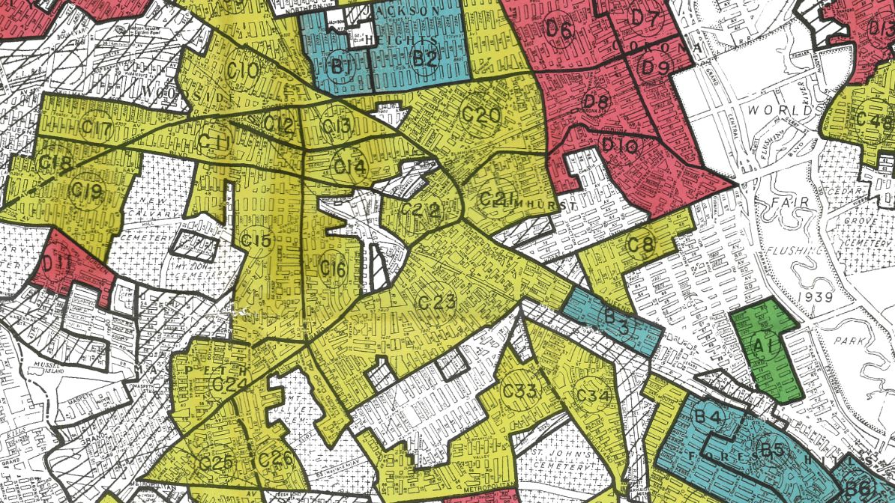
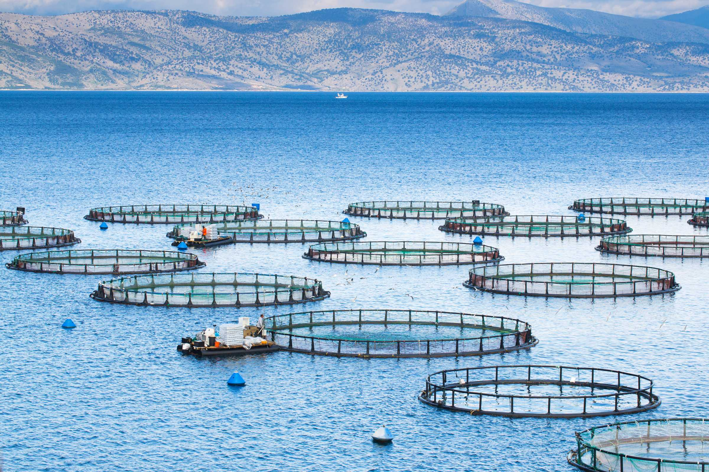

Kimberlee Wong
Home
About
Posts
Get in Touch!
LinkedIn
Email
Categories
All
(4)
MEDS
(4)
Python
(1)
Quarto
(4)
R
(3)
Spatial-Analysis
(3)
Statistics
(1)
My Blog
Shifts in Geese Migration
R
MEDS
Statistics
Quarto
This project’s goal is to determine whether geese migration distances are changing over time.
Kimmy Wong
Dec 13, 2024

Environmental Redlining
R
MEDS
Spatial-Analysis
Quarto
Exploring patterns of environmental justice
Kimmy Wong
Dec 7, 2024

Prioritizing Potential Aquaculture
R
MEDS
Spatial-Analysis
Quarto
This project’s goal is to determine which Exclusive Economic Zones (EEZ) on the West Coast of the US are best suited to developing marine aquaculture for several species of…
Kimmy Wong
Dec 7, 2024
Analysis of the 2017 Thomas Fire
Python
MEDS
Spatial-Analysis
Quarto
This project’s goal is to visually explore the region affected by the Thomas Fire across Ventura and Santa Barbara counties in 2017.
Kimmy Wong
Dec 4, 2024
No matching items